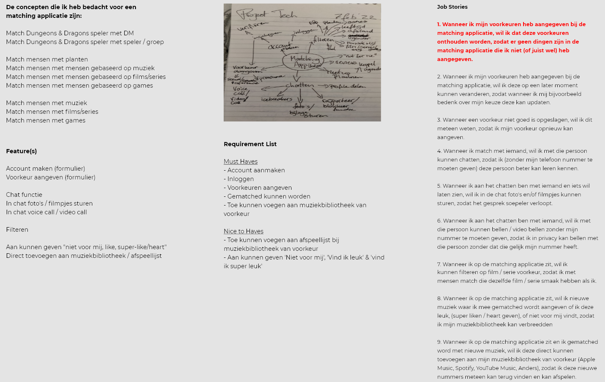
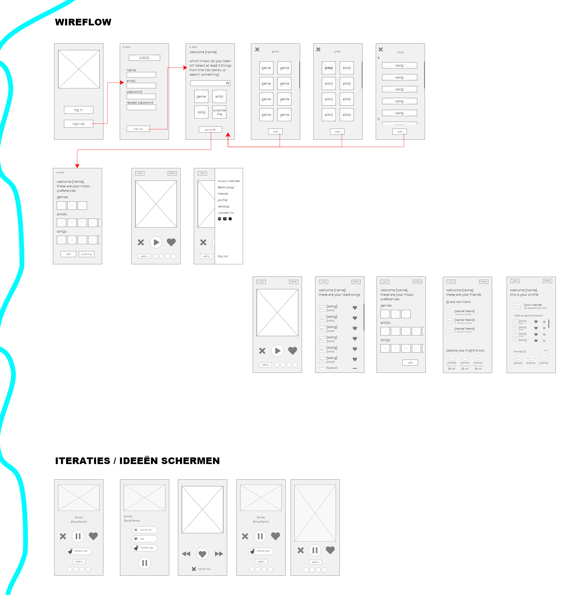

Musicr ‐ Music Matcher

This was a project for one of my classes, called Project Tech. This class was a specialty class which you could sign up for if you wanted to dive deeper in coding, where our knowledge of previous classes were combined (front-end, back-end and design knowledge).
During this project, we were tasked to make a matching application. This could mean matching people with people, people to objects or locations, but also animals to animals, etc. The project was split up into three different classes, but all working on the same project.
For the Back-End part of the application, it needed to be connected to a database, where we also needed to work with CRUD methods, to add or update/delete information (i.e. with an sign up or a change name option), work with Node and Express JS to set up our own Server, and work with a Templating Engine. For the Front-End side of this assignment we had to have some sort of Progressive Enhancement for our application and work with an third-party API. During this project, I have worked with NodeJS, ExpressJS, Sass, HandlebarsJS, as well as MongoDB for the database.
You can find this project on my GitHub Repository
I decided to make an matching application for people, matching them with new music. Users of this app can, when making their account, select the music that they are already fan off, listening to, or preference to certain genres. Then, the app will show them recommended music, based on similar artist, songs, or popular tracks that others are fan off.
Users get to like, dislike, or super like a song, and will be able to immediately add the song to their music library of choice. Songs that they like will also be saved in a Liked Songs library on the app itself, so the user can keep track of their liked songs and easily find them again if needed.
In the app, you can connect with your friends (whome also use the app), and you can get matched sooner with songs that your friends have also liked (as in, if one or more of your friends like a song, that song will appear quicker on your homescreen to match with, then songs based of the music library from for example Spotify, Apple Music or the In-App Music Library).
I'm very proud of how the app turned out, and if you want to test it out yourself, you can find it at my Github Repository
Process
Start
I started this project with brainstorming about what kind of application I wanted to make, and what makes up a matching application. I made a list of what would interest me to make, and also listed some features, made a requirement list, and made a couple of job stories (one of which I chose to continue working on).
After brainstorming, I began to roughly sketch out some wireframes of what I invisioned the designs would looked like. After making small tweaks here and there, I came up with a final idea of how I wanted it to look and what screens I wanted to incorporate.
 When I got the idea a bit more fleshed out, I began to experiment with color palettes, and made the first few versions of the design. I tried out a few different color combinations for the background, and I noticed the black and lilac color combination worked best. After deciding on the background colors, I tried out different accent color options (for buttons and other), and after landing on the light pastel yellow, I started completing my design. When I was finished however, I wasn't quite satisfied, I struggled with distinguishing buttons from the 'selected' state. and so I made my final version, which has the 'selected' state with a small part filled in.
Coding
With my design finished, it was time to start the coding process. This took quite a bit of time, seeing it was my first experience with NodeJS, ExpressJS, templating enginges, Sass and MongoDB. I can honestly say however, that I've got the basics down for those programs, thanks to this project!
Working with Express to easily make my own server, was quite nice. After learning about the terms and reasons behind writing these servers (such as req.params, app.get, res.render, req res), I got the hang of it pretty fast, and could try things myself. One thing I did struggled with however, was setting up HandlebarsJS and work with multiple pages / templates. I didn't notice at first that there where three versions of Handlebars, and that I worked with the incorrect one for the first few weeks of the project. This resulted in unnecessary hard work and after figuring out what went wrong, a few deep sighs (and a few smackes on the head whoops). But, besides the frustrations I had with Handlebars, I really enjoyed working with it.
This project was also the first time where I used any sort of database. During this project we worked with MongoDB. It wasn't that difficult to learn, but it did take a while to set it up correctly. The first time that I filled out a form and it was succesfully send to my database, that was a very satisfying and awesome feeling!
During this project I had to have some sort of Progressive Enhancement, and to have worked with a third-party API. I really wanted to incorporate the Spotify API, to be able to work with the music library and collect data from it, to make my application work. Sadly, this didn't work out well, the documentation for the API was quite difficult to understand, and what I tried with connecting it with a script, didn't work. I also tried to work with other music API's, but those needed payment or didn't work on localhost (it needed a domain name). So, after discussing it with my professor, we decided to skip the music API (keeping it part as my concept, but not for my prototype), and configure a random local API, seeing he knew I was capable of working with API's, but didn't have the time or equipment needed to set it up. For that reason I incorporated the geolocation API for the sign up page, instead of the music API.
I would have loved to have continued working on this project and made my concept and designs all come to life, but with limited time and resources this was quite difficult to do. Maybe in the future however, I could continue this project and finish the application.